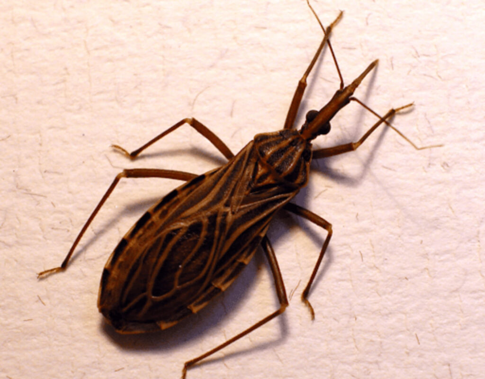
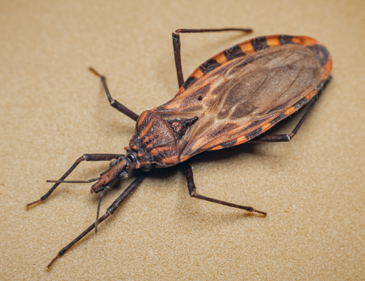

O Besouro Barbeiro é um inseto noturno encontrado em regiões tropicais e subtropicais. Ele se alimenta de sangue de animais e, eventualmente, de humanos, sendo conhecido por transmitir a doença de Chagas. Costuma se esconder durante o dia em frestas de paredes, telhados e móveis, saindo à noite para se alimentar.
 Apesar do risco que representa, o Besouro Barbeiro também tem importância ecológica. Ele faz parte da cadeia alimentar, servindo de alimento para aves, répteis e outros predadores. Entender seus hábitos é fundamental para prevenir acidentes e garantir a segurança das pessoas que vivem nas regiões onde ele é encontrado.
Além disso, estudar o Besouro Barbeiro ajuda cientistas a desenvolver estratégias de controle e prevenção de doenças, contribuindo para a saúde pública. Esse inseto mostra como até os menores animais podem ter grande impacto sobre o ambiente e a vida humana, reforçando a importância do conhecimento e da prevenção.